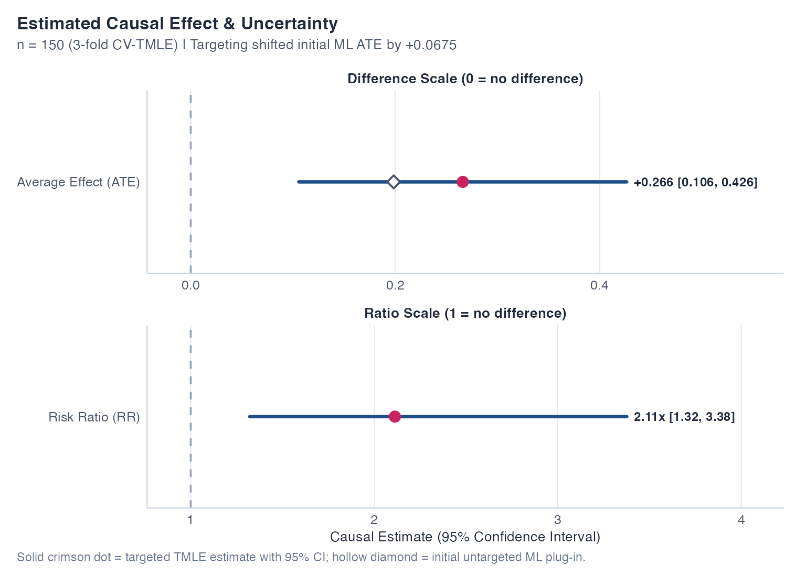
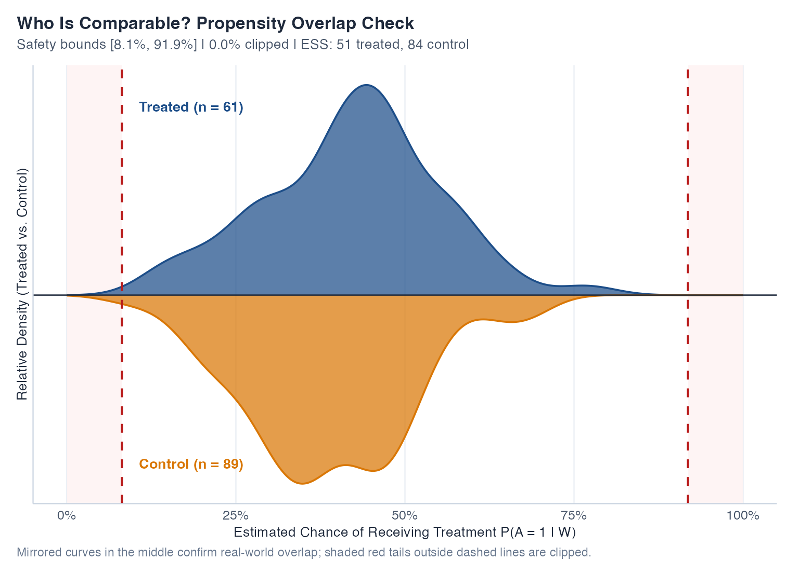

Produces clean, Tufte-inspired ggplot2 causal figures turning every step
of the TMLE estimator into an intuitive visual check:
"effect": Causal Effect Forest Plot (Default). Publication-ready effect estimates and 95% confidence intervals with direct numeric labels, a"No effect"reference line, and (for binary ATE) a hollow marker showing the untargeted initial ML estimate before bias calibration."overlap": Step 2 (Fair Comparison / Positivity Check). Mirrored propensity distributions directly labeled"Treated"and"Control", with shaded tail clipping zones (or trimmed density-ratio distribution for continuous LMTPs)."targeting": Steps 3–4 (How Much Bias Calibration Changed Things). Initial ML counterfactual contrasts plotted against targeted TMLE contrasts, with direct"No adjustment"reference line and population shift marker."balance": Confounder Balance Dumbbell Plot. Before vs. after IPW imbalance (|SMD|) ordered from largest baseline imbalance to smallest, highlighting the balanced< 0.10zone without duplicate factor mirror rows."sensitivity": Positivity Strictness Sweep. Instantretarget()sensitivity curve across clipping thresholds showing stability of point estimates and 95% confidence intervals."learners": Cross-Validated Model Weights & Risk. Clean paired panel comparing Super Learner weights and cross-validated error across candidate workflows for Outcome (Q), Treatment (g), and Missingness (C)."eif": Step 5 (Outlier Influence Check). Observation-level share of total variance (%) flagging single rows exceeding the10%caution line."dashboard": 4-Panel Causal Audit Dashboard. Uncluttered 2x2 view combining Overlap, Targeting, Sensitivity, and Balance (or Influence for continuous policies) viapatchwork.
Arguments
- object
A fitted
"tmle_fit"object.- type
Diagnostic plot type:
"effect"(default),"overlap","targeting","balance","sensitivity","learners","eif", or"dashboard".- g_grid
Numeric vector of lower positivity thresholds in
(0, 0.5)swept whentype = "sensitivity"or"dashboard".- ...
Currently unused.
References
Schuler, M. S., & Rose, S. (2017). Targeted maximum likelihood estimation for causal inference in observational studies. American Journal of Epidemiology, 185(1), 65–73.
Luque-Fernandez, M. A., Schomaker, M., Rachet, B., & Schnitzer, M. E. (2018). Targeted maximum likelihood estimation for a binary treatment: A tutorial. Statistics in Medicine, 37(16), 2530–2546.
Petersen, M. L., Porter, K. E., Gruber, S., Wang, Y., & van der Laan, M. J. (2012). Diagnosing and responding to violations in the positivity assumption. Statistical Methods in Medical Research, 21(1), 31–54.
Examples
df <- sim_causal_cohort(n = 150, outcome_type = "binary", seed = 42)
fit <- tmle_spec(y, a, c(age, sex, lab_1, lab_2), estimand = c("ate", "rr")) |>
set_resamples(v_folds = 3L) |>
fit(df)
autoplot(fit)

autoplot(fit, type = "overlap")
